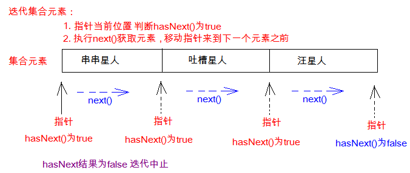
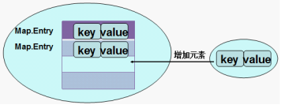

集合：是一种容器，用来装对象的容器，不能装基本数据类型。
数组也是容器，可以用来装基本数据类型，也可以用来装对象。
本质上，集合需要用对应的数据结构实现，是多个类实现接口Collection系列和Map接口的统称
Collection 表示一组对象，这些对象也称为 collection 的元素。一些 collection 允许有重复的元素，而另一些则不允许。一些 collection 是有序的，而另一些则是无序的。
Collection方法：
| 归类 | 方法签名 | 方法描述 | |
|---|---|---|---|
| 1 | 添加 | add(E e) | 添加一个元素对象到当前集合中 |
| 2 | 添加 | addAll(Collection<? extends E> other) | 添加多个元素，把other集合的所有元素都添加到当前集合中，this = this ∪ other； |
| 3 | 删除 | clear() | 清空集合 |
| 4 | 删除 | remove(Object obj) | 删除一个元素，根据元素的equals()来判断是否是要被删除的元素，如果元素的类型没有重写equals方法，那么等价于==，如果重写了equals，那么就按照equals的规则来比较，一般比较内容。 |
| 5 | 删除 | removeAll(Collection<?> coll) | 删除多个元素，把当前集合中和c共同的元素删除，即this = this - this ∩ coll;子集 |
| 6 | 删除 | retainAll(Collection<?> coll) | 删除多个元素，在当前集合中保留和c的共同的元素，即this = this ∩ coll；交集 |
| 7 | 查 | int size() | 获取元素的个数 |
| 8 | 查 | boolean contains(Object obj) | 是否包含某个元素。根据元素的equals()来判断是否是要被删除的元素，如果元素的类型没有重写equals方法，那么等价于==，如果重写了equals，那么就按照equals的规则来比较，一般比较内容。 |
| 9 | 查 | boolean containsAll(Collection<?> coll) | 是否包含多个元素。判断当前集合中是否包含coll集合的所有元素，即coll是否是this的子集。 |
| 10 | 查 | boolean isEmpty() | 集合是否为空 |
| 11 | 遍历 | Object[] toArray() | 将集合中的元素用数组返回 |
| 12 | 遍历 | Iterator iterator() | 返回一个迭代器对象，专门用于遍历集合 |
即Collection集合元素的通用获取方式。每一种实现了Iterable接口的集合内部，都会有一个内部类实现了Iterator接口
public boolean hasNext() 【如果仍有元素可以迭代，则返回 true。】
public E next() 【返回迭代的下一个元素。】
在调用Iterator的next方法之前，迭代器的索引位于第一个元素之前，指向第一个元素，当第一次调用迭代器的next方法时，返回第一个元素，然后迭代器的索引会向后移动一位，指向第二个元素，依此类推，直到hasNext方法返回false，表示到达了集合的末尾，终止对元素的遍历。
在进行集合元素取出时，如果集合中已经没有元素了，还继续使用迭代器的next方法，将会发生java.util.NoSuchElementException没有集合元素的错误
注意：不要在使用Iterator迭代器进行迭代时，调用Collection的remove(xx)方法，否则会报异常java.util.ConcurrentModificationException，或出现不确定行为。
for(元素的数据类型 变量 : Collection集合or数组){
//写操作代码
}
java.lang.Iterable接口，实现这个接口允许对象成为 "foreach" 语句的目标。
java.lang.Iterable接口的抽象方法：
public Iterator iterator(): 【获取对应的迭代器】
foreach本质上就是使用Iterator迭代器进行遍历的。
所以也不要在foreach遍历的过程使用Collection的remove()方法。
如果在Iterator、ListIterator迭代器创建后的任意时间从结构上修改了集合（通过迭代器自身的 remove 或 add 方法之外的任何其他方式），则迭代器将抛出 ConcurrentModificationException。这就是Iterator迭代器的快速失败（fail-fast）机制。
结构性修改是指：改变list的size大小，或者，以其他方式改变他导致正在进行迭代时出现错误的结果。
那么如何实现快速失败（fail-fast）机制的呢？
在ArrayList等集合类中都有一个modCount变量。它用来记录集合的结构被修改的次数。
当我们给集合添加和删除操作时，会导致modCount++。
然后当我们用Iterator迭代器遍历集合时，创建集合迭代器的对象时，用一个变量记录当前集合的modCount。例如：int expectedModCount = modCount;，并且在迭代器每次next()迭代元素时，都要检查 expectedModCount != modCount
注意，迭代器的快速失败行为不能得到保证，
自定义类时如果一个实现类不希望提供fail-fast迭代器，则可以忽略这个字段。
它是一个带有索引的集合，通过索引就可以精确的操作集合中的元素（与数组的索引是一个道理）。
集合中可以有重复的元素，通过元素的equals方法，来比较是否为重复的元素。
ArrayList：动态数组 Vector：动态数组 LinkedList：双向链表 Stack：栈
1、添加元素
void add(int index, E ele) 【在[index]位置添加一个元素】
boolean addAll(int index, Collection<? extends E> eles) 【在[index]位置添加多个元素】
2、获取元素
List subList(int fromIndex, int toIndex) 【截取[fromIndex,toIndex)部分的元素】
3、获取元素索引
int indexOf(Object obj) 【返回obj在当前集合中第一次出现的下标】
int lastIndexOf(Object obj) 【返回obj在当前集合中最后一次出现的下标】
4、删除和替换元素
E remove(int index) 【删除[index]位置的元素，返回被删除的元素】
E set(int index, E ele) 【替换[index]位置的元素，返回被替换的元素】
5、遍历
ListIterator listIterator() 【默认游标在[0]开始】
ListIterator listIterator(int index) 【默认游标在[index]位置】
void set(E e)： 【用指定元素替换 next 或 previous 返回的最后一个元素】
void remove()： 【从列表中移除由 next 或 previous 返回的最后一个元素】
boolean hasPrevious()： 【如果以逆向遍历列表，往前是否还有元素。则返回 true】
E previous()： 【返回列表中的前一个元素。】
int previousIndex()： 【返回列表中的前一个元素的索引】
boolean hasNext() 【以正向遍历列表时，如果列表迭代器有多个元素，则返回 true】
E next() 【返回列表中的下一个元素。】
int nextIndex() 【返回对 next 的后续调用所返回元素的索引。】
Set 集合不允许包含相同的元素，如果试把两个相同的元素加入同一个 Set 集合中，则添加操作失败。
Set集合支持的遍历方式和Collection集合一样：foreach和Iterator。
HashSet 是 Set 接口的典型实现，大多数时候使用 Set 集合时都使用这个实现类。
java.util.HashSet底层的实现其实是一个java.util.HashMap支持，然后HashMap的底层物理实现是一个Hash表。
HashSet/LinkedHashSet：
底层结构：里面维护了一个TreeMap，都是基于红黑树实现的！
特点： 1、不允许重复 2、实现排序， 自然排序或定制排序
如果使用的是自然排序（Comparable），则通过调用实现的compareTo方法
自然排序：它判断两个对象是否相等的唯一标准是：两个对象通过 compareTo(T o) 方法比较返回值为0。
如果使用的是定制排序（Comparator），则通过调用比较器的compare方法
Collection中的集合称为单列集合，Map中的集合称为双列集合。java.util.Map<K,V>
1、存储键值对(key,value)，也称为映射关系，键值对是Map.Entry接口的实现类对象。
2、所有存储到Map中的key不能重复， 每个键只能对应一个值（这个值可以是单个值，也可以是个数组或集合值）。
1、添加
V put(K key, V value)： 【将一对键值对添加到当前map中，同一个key如果put两次，第二次会覆盖上次的value】
void putAll(Map m)： 【将另一个map中的所有键值对添加到当前map中】
2、删除
void clear()： 【清空所有映射关系】
V remove(Object key)： 【根据key删除一整对键值对(key,value)】
3、查询
int size()： 【返回键值对的数量】
boolean containsKey(Object key)： 【是否包含某个key】
boolean containsValue(Object value)： 【是否包含某个value】
V get(Object key)： 【根据key获取value值，如果此映射不包含该键的映射关系，则返回 null。】
boolean isEmpty() 【如果此映射未包含键-值映射关系，则返回 true。】
4、遍历
Set<Entry<K,V>> entrySet() 【遍历所有的键值对，映射关系的 Set 视图 】
Set<K> keySet() 【遍历所有的key，键的 Set 视图】
Collection<V> values() 【遍历所有的value，值的 Collection 视图】
若指定的键(key)在集合中存在，则返回值为集合中键对应的值（该值为替换前的值），并把指定键所对应的值，替换成指定的新值。
Map的遍历，不能支持foreach
（1）分开遍历：
单独遍历所有key
单独遍历所有value
（2）成对遍历：

Map接口的常用实现类：HashMap、TreeMap、LinkedHashMap和Properties。其中HashMap是 Map 接口使用频率最高的实现类。
HashMap和Hashtable都是哈希表。
Hashtable是线程安全的，任何非 null 对象都可以用作键或值。不允许null键
HashMap是线程不安全的，并允许使用 null 值和 null 键。
Properties 类是 Hashtable 的子类，Properties 可保存在流中或从流中加载。属性列表中每个键及其对应值都是一个字符串。
存取数据时，建议使用setProperty(String key,String value)方法和getProperty(String key)方法。
更多方法请见API文档
咱们存到Set中只有一个元素，又是怎么变成(key,value)的呢？
原来是，把添加到Set中的元素作为内部实现map的key，然后用一个常量对象PRESENT对象，作为value。